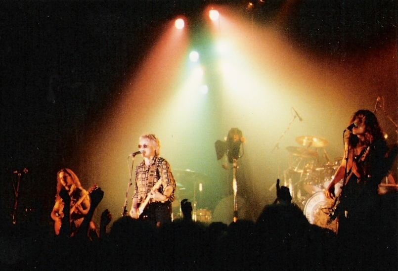

Últimos anos de Freddie: 1988–91
Após o fim da turnê de A Kind of Magic, Brian May começou a trabalhar em um futuro álbum solo. Freddie Mercury fez o mesmo, lançando o single "The Great Pretender". Após uma série de elogios e aproximações, o cantor produziria um disco de título Barcelona juntamente com a cantora de ópera Montserrat Caballé, da qual era fã e em 1992 planejavam cantar juntos na estreia dos Jogos Olímpicos. Entretanto, entre abril e maio de 1987, o vocalista foi diagnosticado com o vírus da AIDS, fato que bagunçou todos os planos do artista que, a princípio, manteve o quadro em segredo. Roger Taylor decidiu fundar uma nova banda, chamada The Cross, e John Deacon fez gravações com Elton John, Cozy Powell e também fundou um grupo, chamado The Immortals, que chegou apenas a lançar uma canção.
Em janeiro de 1988, o grupo se reuniu em Londres para definir que, a partir daquele momento, todo o futuro repertório inédito do Queen seria creditado a todos, independentemente de seus reais compositores,[133] para evitar decisões guiadas pelo ego ou ganância. Assim, os quatro também trabalhariam juntos novamente no estúdio. Mercury se desdobrava entre as sessões do futuro álbum com as gravações de Barcelona, enquanto, oficialmente não se pronunciava acerca de sua doença para seus colegas de trabalho. O produtor David Richards pensava que o cantor estava com câncer.
Ao mesmo tempo, Brian passava por uma vida pessoal cada vez mais traumática e apresentava sintomas de depressão. Assumiu publicamente o relacionamento com Anita Dobson, separou-se da esposa e de seus filhos e em junho de 1988 perdeu seu pai. No entanto, há participação intensa de May no álbum. "I Want It All", o primeiro single do álbum, tornou-se um dos maiores sucessos do Queen. The Miracle estreou no primeiro lugar nas paradas do Reino Unido, e nos Estados Unidos teve um desempenho regular, embora superior a A Kind of Magic. A mídia especializada em geral teve opiniões mistas a positivas, sendo considerado um trabalho mais orientado ao rock que a banda fazia anteriormente. Sobre o projeto, Roger Taylor considerou que "era o melhor álbum do Queen em dez anos facilmente".
Ao lançar o single "I Want It All" em abril de 1989, a banda anunciou que não faria turnê do álbum. Freddie justificou afirmando que queria quebrar o ciclo que faziam desde o início da carreira. Ainda, os clipes gravados para as faixas de trabalho foram mais complexos do que os anteriores, utilizando vários recursos que diminuíssem o foco em Mercury. O cantor deixou a barba crescer, fato que o ajudou a esconder sinais do Sarcoma de Kaposi em sua pele. No último vídeo gravado, da canção "The Miracle", o quarteto teve a ideia de contratar atores mirins para a atuar, com o grupo original aparecendo ao final. O vocalista, nestas imagens, pareceu mais envelhecido e fraco do que na última turnê. Brian e Roger ficaram responsáveis por promover o trabalho, e negaram todos os boatos acerca de uma possível doença de seu intérprete.
Poucos meses depois ao lançamento de The Miracle, Freddie voltou sozinho ao Montreux Studios para produzir novas músicas. Foi nessa época que o cantor revelou aos seus colegas ser portador da doença, em uma reunião formal. O diagnóstico entristeceu e devastou os demais membros, que estiveram dispostos a trabalhar num futuro álbum, pelo pouco tempo de vida que o cantor ainda poderia ter. Mercury exigiu que não contassem a ninguém acerca do vírus, fato que fez a banda criar uma espécie de escudo protetor sobre o vocalista. O repertório conteve algumas músicas que sobraram de Barcelona, The Miracle e canções que anteriormente estavam destinadas ao futuro trabalho solo de Brian May. As gravações no início foram intensas, durando semanas ininterruptas. No entanto, quando o Queen foi receber o Brit Awards em 1990 por sua contribuição à música britânica, Freddie Mercury estava numa aparência mais diferente ainda. Com uma roupa folgada, cabelo ralo e parecendo pálido e cansado, apenas agradeceu, enquanto Brian May fez o discurso. O ocorrido só fez aumentar as especulações de que o vocalista estava doente. Foi sua última aparição pública.
O single "Innuendo" foi lançado em janeiro de 1991 e, em decorrência do estado frágil do cantor, a banda resolveu fazer um clipe com ilustrações. Cada ação para preservar o silêncio do artista era questionada pela imprensa, mas os músicos sempre negavam tudo. O álbum, distribuído no início daquele ano, teve a mesma recepção de The Miracle, diferenciando-se pelo fato de a mídia especializada destacar que as letras estavam mais sérias e reflexivas. Nas divulgações públicas do trabalho, apenas Brian e Roger participavam, e a falta de John e Freddie era sempre notada. Mas foi o clipe de "These Are the Days of Our Lives" que evidenciou a fraqueza do artista, que mal podia se mover, por causa de uma lesão no pé. Freddie apenas confirmou a doença publicamente um dia antes de sua morte.
O cantor morreu em 24 de novembro de 1991, com o diagnóstico de broncopneumonia. Seu funeral ocorreu em Londres três dias depois, assistido por trinta e cinco pessoas, incluindo a família de Freddie, os membros e o empresário do Queen, Mary Austin, Jim Hutton e poucas outras pessoas. O corpo do cantor foi cremado no Cemitério de Kensal Green, e suas cinzas foram entregues a Mary Austin, sendo que apenas ela, a família do cantor e os membros do Queen sabem onde as cinzas foram depositadas, e nunca revelaram seu paradeiro. Mary ficou com a maior parte da herança do cantor.